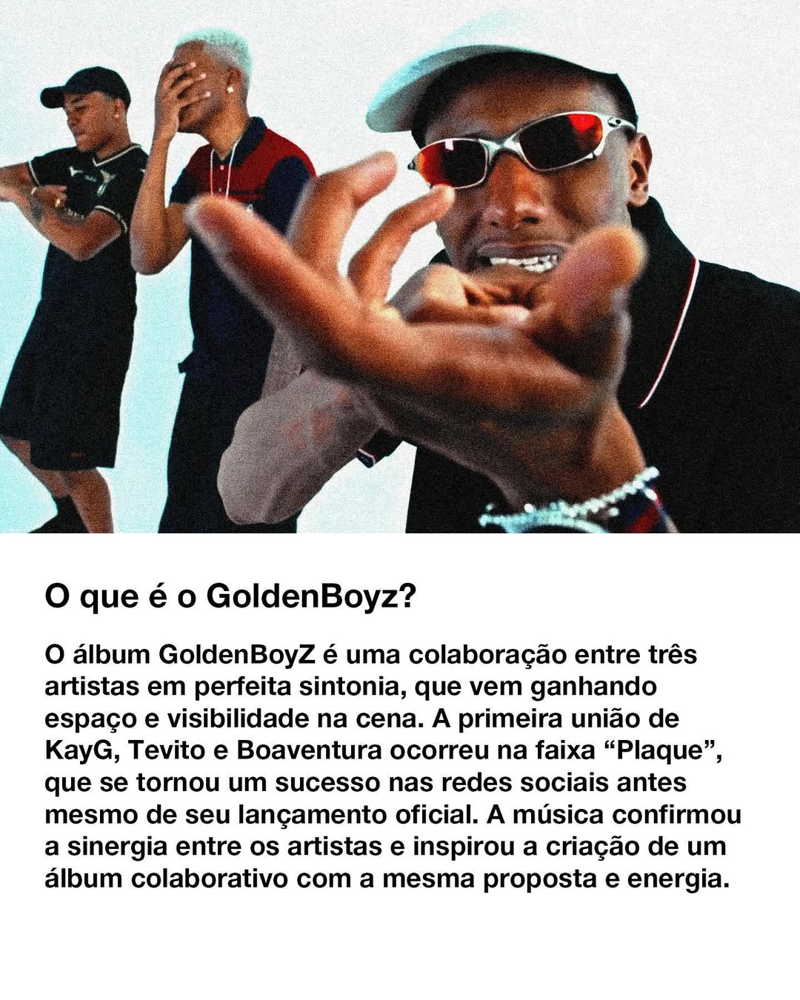

Detalhando "GoldenBoyz, Vol. 1": A Ascensão e o Brilho do Trap Nacional com KayG, Tevito e Boaventura
O álbum "GoldenBoyz, Vol. 1" (2024), uma colaboração poderosa entre os rappers KayG, Tevito e Boaventura, não é apenas um compilado de faixas, mas sim uma declaração sonora da nova geração do Trap brasileiro. Com 14 faixas e cerca de 41 minutos, o projeto é uma imersão na mentalidade da ostentação conquistada, da superação da origem humilde e da celebração do luxo merecido.
A Tese do "GoldenBoyz"
A espinha dorsal do álbum é a narrativa da ascensão social. O conceito de "GoldenBoyz" – Garotos de Ouro – é usado como um selo de reconhecimento para aqueles que transformaram o esforço da periferia (a "lama") em sucesso ("ouro"). As letras são repletas de referências a carros de luxo (como na faixa "ASTON MARTIN"), roupas de grife, joias caras (ice e chainz), e a vida noturna em festas exclusivas, elementos que funcionam como afirmação de poder e vitória.
Exemplo da Mensagem (Faixa "GBZ"): A faixa título, ou uma das mais emblemáticas, "GBZ", resume o espírito do álbum: "Os Goldenboy chegou no baile. O terror dos boy, nós roubou a cena." A ostentação não é vazia, é a prova material de que o jogo foi vencido.
O Intercâmbio de Flows
Um dos pontos mais ricos do álbum é a dinâmica e a química entre os três artistas:
KayG: Frequente em versos com uma pegada mais direta e punchlines marcantes, trazendo a essência do Trap mais cru e focado na vivência e na conquista do dinheiro (guap).
Tevito: Traz versos com melodia envolvente e um flow mais cadenciado, muitas vezes abordando o relacionamento com mulheres e a vida de rockstar com um toque de frieza emocional.
Boaventura: Contribui com sua voz distinta e uma entrega que equilibra a agressividade com a reflexão, reforçando a autenticidade e o compromisso com a arte.
A habilidade em se alternar e complementar nos refrões e nos versos faz com que cada faixa mantenha um frescor, mesmo que o tema central seja recorrente.
Produção e Sonoridade
A sonoridade de GoldenBoyz é puro Trap moderno e de alta qualidade. As produções, frequentemente assinadas por nomes da cena que entendem a estética do trio, investem em: Graves Potentes: Elemento essencial do Trap que garante a batida marcante. Sintetizadores Atmosféricos e Melancólicos: Usados para dar profundidade e um toque de drama à narrativa de superação. Hats e Snares Clicantes: A marca do drill e do trap contemporâneo que mantém o ritmo acelerado e dançante. O álbum é masterizado para soar bem em grandes sistemas de som, reforçando seu apelo nas baladas e na cultura automotiva do Trap.
Faixas de Destaque e Temáticas Secundárias
Embora a ostentação domine, o álbum explora nuances importantes:
"PLAQUE": Uma faixa que mergulha na ambição e reconhecimento, onde o desejo por dinheiro é diretamente ligado à necessidade de responder e superar a escassez do passado. O plaque (placa/troféu) é a prova do valor.
"CASH" / "AURA": Estas faixas aprofundam a relação entre o sucesso e as tentações, explorando como a fama e o dinheiro atraem o interesse, mas também trazem desconfiança e a necessidade de manter o foco.
"MUDANÇAS DE HUMOR": Um momento mais reflexivo, que pode tocar nos custos emocionais e mentais de manter o ritmo frenético da vida do rapper em ascensão.
Em suma, "GoldenBoyz, Vol. 1" é um trabalho coeso que cumpre o que promete: entregar Trap de alto calibre com uma narrativa aspiracional. É a trilha sonora para o jovem que está em busca do topo, provando que KayG, Tevito e Boaventura são forças a serem reconhecidas no cenário nacional.